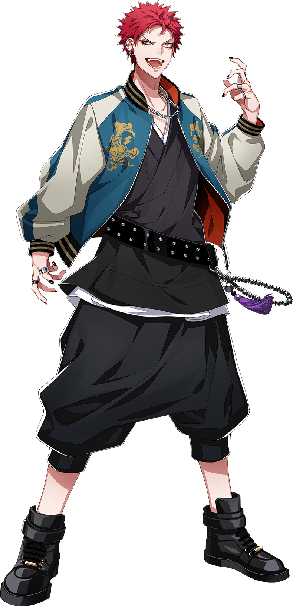
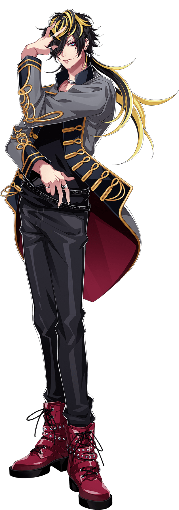
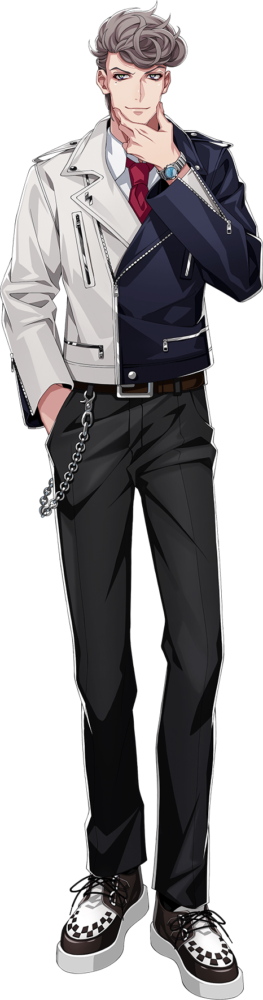

Bad Ass Temple is the Nagoya division representative rap group. The team consists of
the lawyer
Hitoya Amaguni,
visual kei musician Jyushi Aimono, and their leader, buddhist monk Kuko Harai.
Kuko Harai

Kuko Harai, a.k.a. Evil Monk, is a heir of the Buddhist temple, former member of Naughty Busters and Mad
Comic Dialogue,
and the current leader of Bad Ass Temple.
He is the heir of the Kugen temple, a renowned Buddhist temple. At 14, he mastered an ascetic life his
father,
Shakku Harai, was unable to. He's badmouthed and his behavior is inappropriate for a monk yet, his faith is
deep
and he treasures his friends. He often makes up moralising-like remarks. He hates crowds and often acts
alone.
In the past, he was a part of Naughty Busters with Ichiro Yamada in
Ikebukuro.
“ Freedom is not worth having if it does not include the freedom to make mistakes.
”
Solo
Jyushi Aimono

Jyushi Aimono, a.k.a. 14th Moon, is a Visual kei musician and the second member of Bad Ass
Temple.
He is a vocalist in ArgoξOrchestra, Visual kei band. A narcissist crybaby. He doesn't have many friends, but
he cherishes his stuffed
plushie pig named "Amanda" who is 45 years old. When he meets someone for the first time or is nervous, his
personality changes
and he talks in a pompous and exaggerated tone. When he was a student, he was harshly bullied. At the time,
Hitoya Amaguni
advocated for him and has since earned Jyushi's respect.
“ Never, never, never, never, give up. ”
Solo
Hitoya Amaguni

Hitoya Amaguni, a.k.a. Heaven & Hell, is a lawyer and the third member of Bad Ass Temple.
A lawyer and the representative of the Amaguni Law Firm, who will take on any case for the right amount of
money.
However, he hates bullying and is willing to represent its victims pro bono due to his brother ending his
own life
after being harshly bullied. Despite having a sharp tongue, he has a heart of gold.
A childhood friend of Jakurai Jinguji from Shinjuku Division, whom he knew
since junior
school.
“ It is my belief that reaching out to the moon is my goal. Even if it does not arrive.
”
Solo